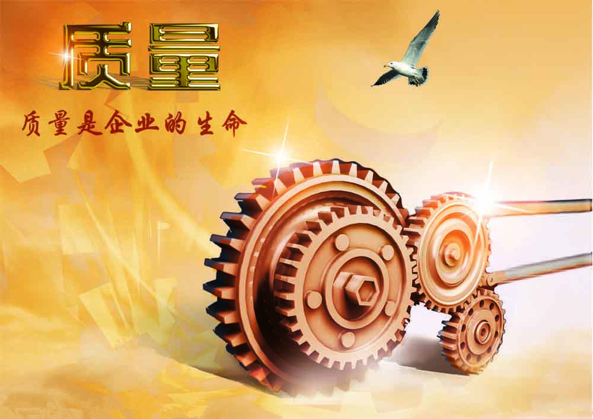
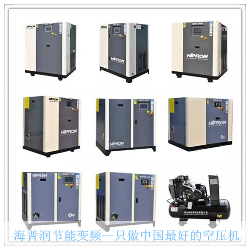

筑质量大堤，迎世纪挑战
文章出处：螺旋钢管发布员 人气：发表时间：2015-08-31 12:59

物竞天择，适者生存。
当今的世界，是开放的世界，发展浪潮波涛汹涌，创业意识势不可挡，一个企业要在竞争中乘风破浪，立于不败之地，海普润空压机靠的是什么呢?靠的是--优良的产品质量。

如果说水是生命之源，那么质量又何尝不是青岛海普润空压机的生命呢?海普润以质量谋生存。 海普润空压机之所以能在星罗棋布的同行中立足，靠的是顾客的支持与信任。
凭着“科技创新、以质取胜”的企业精神，“关注细节、精益求精”的工作作风，节能环保、经久稳定”的产品制造标准，本着“产品一流、服务满意”的发 展宗旨，海普润空压机将努力发展成为国家一流的压缩机生产厂家，研发生产更节能更环保的空压机，更好的为人民服务。
此文关键字：筑,质量,大堤,迎,世纪,挑战,物竞天择,
推荐产品


相关产品
相关推荐
- 镀锌钢管质量技巧要求
- 螺旋钢管价格螺旋钢管必不可少的质量检测
- 螺旋管厂螺旋管加热操作是决议制品质量非常重
- 我国建筑螺旋钢管价格市场销售价格状态分析
- 螺旋管厂根据螺旋钢管质量检验结果通常将螺旋
- 建筑螺旋钢管市场依旧弱势，但跌势较前也有所
- “稳增长”大潮成为建筑螺旋钢管市场的新亮点
- 汽车半轴套管用壁厚11的厚壁螺旋钢管保证质量
- 大口径螺旋管质量的鉴别简单介绍
- 大口径螺旋管行情/大口径螺旋管生产质量注意事
- 天然气螺旋钢管L290焊丝质量选择方法
- 加工时Q235A螺旋钢管的材质和质量的变化
- 山东螺旋钢管市场价格行情|螺旋钢管质量控制方
- 直缝钢管的质量检查和查验，应由供方技术质量
- 承压流体输送用螺旋钢管的质量检测：
- 国内建筑螺旋钢管去库存化较去年加快
- 20号大口径螺旋钢管质量的鉴别
- 展望7月，螺旋钢管价格市场有望筑底
- 直缝钢管的质量检测方法是怎样的
- 螺旋钢管生产质量注意事项螺旋钢管价格
- 大口径螺旋钢管价格/大口径螺旋管生产质量注意
- 螺旋焊管作为输水管道的专用管材质量合格的标
- 怎么检查螺旋钢管质量
随机推荐
- 螺旋钢管价格/螺旋管的规格及截面特性
- 基本面难有改观，螺旋管厂价格或将继续下行
- 螺旋钢管价格处于高位是冬储放缓特征之一
- 螺旋管厂亏损扩大，未来减产和限产可能增大
- 天津市万盛华业钢铁制造有限公司为十八大做的
- 平抑螺旋钢管价格稳定的重要力量是什么？
- 屏東縣宝钢产壁厚10的GB/T14291-2006直埋钢套钢保温
- 北美和亚洲螺旋钢管价格继续上升，欧洲由降转
- 去库存意愿较强，螺旋钢管厂家代理制逐步消亡
- 天津市万盛华业钢铁制造有限公司
- 粗钢产量回升一定程度上限制螺旋钢管价格上行
- 乌鲁木齐可随时定做325*18的大口径厚壁螺旋钢管
- 螺旋钢管价格短期内有振荡上行的空间 但涨
- 海西船舶用600*16的SY/T5037-2000气体输送螺旋钢管每
- 18大虽已经召开但天津市万盛华业钢铁制造有限公
- 湖南gb9948化肥专用管 湖南201不锈钢焊管&nbs
- 清远可来料加工壁厚10的0Cr13美标螺旋钢管今日成
- 远期螺旋钢管价格市场偏强震荡
- 长期低采购恐使螺旋钢管厂遭遇“无米之炊”的
- 5月7日摩托车用厚壁螺旋钢管钢管知识
- 螺旋钢管和螺旋焊管材质一样吗？
- 7月31日钢市快讯：南京螺旋钢管价格部分大管上
- 延安缝钢管 延安焊接钢管价格 延安好钢
- 在18大召开期间中国螺旋管规格市场供需关系也没
- 部分地区螺旋钢管价格涨幅过百
- 螺旋钢管价格消费技能上的又一打破
- 11月22日壁厚8的GB/T3640-88不锈钢螺旋钢管哪里的最
- 六安防腐螺旋管厂家 六安螺旋管规格 六
- 庆阳大口径厚壁螺旋钢管 庆阳螺旋焊接钢管 庆阳
- 西安螺旋管供应 西安螺旋钢管销售 西安螺旋管制
重点推荐
- 螺旋管厂在制作螺旋焊管过程中,需要主意的问题
- 波段和趋势共振对螺旋钢管价格有不可预计的推
- 广东Q345b螺旋管 广东X42螺旋管 广东16锰螺旋钢管
- 天津螺旋钢管市场价格小幅下降20元
- 不同板厚及不同环境温度下16Mn钢的预热温度
- 螺旋管厂、螺旋钢管价格交货技术条件
- 沈阳购买螺旋钢管 沈阳螺旋钢管生产工艺 沈阳螺
- 云南螺旋钢管图片 云南排水用螺旋钢管 云南螺旋
- 安庆购买螺旋钢管 安庆螺旋钢管生产工艺 安庆螺
- 天津螺旋管厂-节能减排效力显现
- 南昌生产钢管 南昌钢管壁厚标准 南昌钢
- 外贸16锰钢管 外贸Q235A螺 外贸L245钢管
- 大庆Q235A螺旋管 大庆q345c螺旋钢管 大庆Q345b螺旋管
- Q235B螺旋管生产工艺Q235B螺旋管的特点
- 螺旋钢管按用途分为
- 成都保温螺旋钢管 成都16锰螺旋钢管 成都
- 螺旋管的外径,内径,相邻螺旋间距约为多少算标准
- 黄冈GB/T9711螺旋管 黄冈螺旋钢管市场 黄冈l360螺旋
- 什么是螺旋缝钢管|Q235螺旋钢管工艺流程
- “2012世界末日”之后能否也让螺旋钢管劫难重生